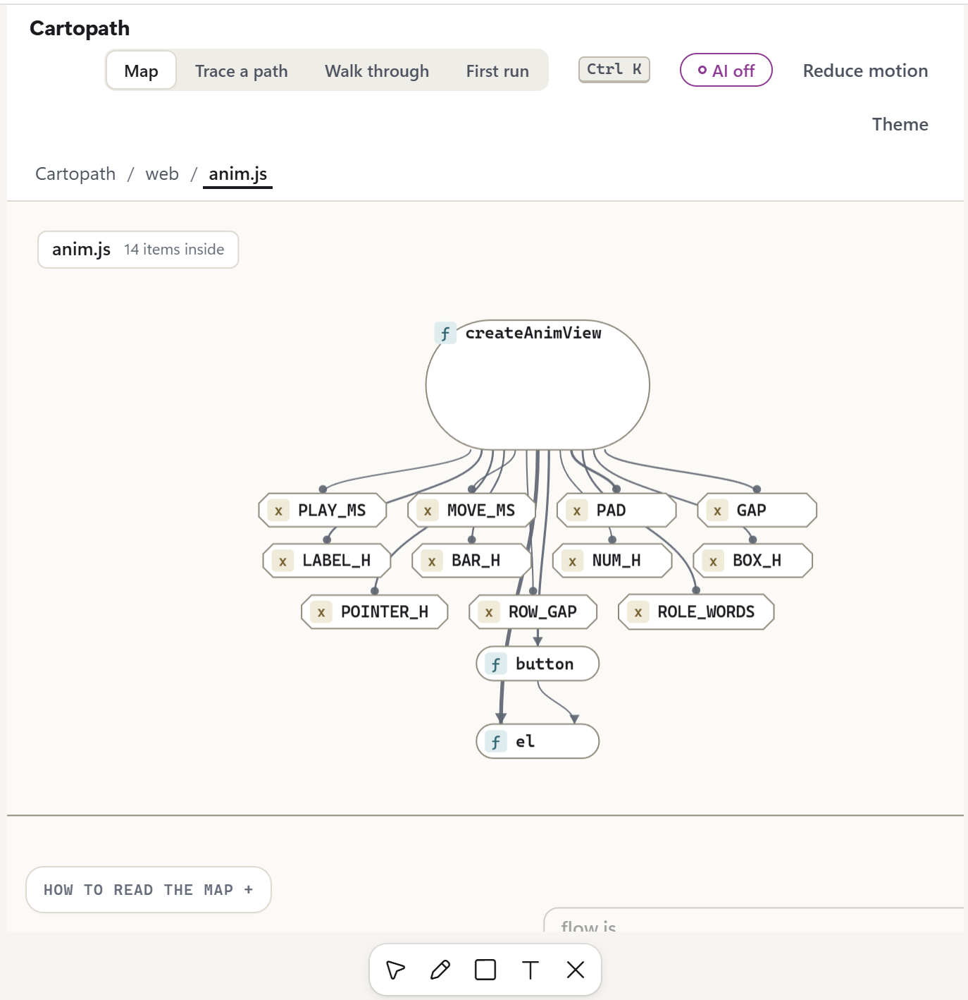

See how code fits together.
Clerestoria builds tools that help developers and AI coding agents understand complex codebases.
Explore Cartopath
anim.jsCartopath
An interactive codebase explorer that maps software architecture and gives AI coding agents structured code context.
- Map a codebase
- Zoom from the repository down to individual files, classes, and functions.
- Trace a dependency path
- Follow the connections between parts of the code and see which links are inferred.
- Walk through a function
- Step through control flow alongside the corresponding source code.